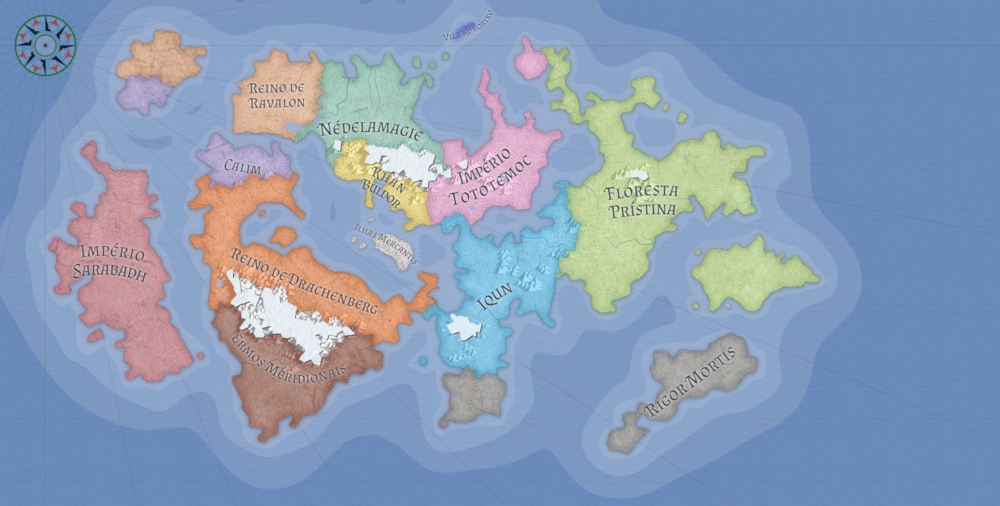

Medieval e steampunk, jogado em D&D com raízes em Forgotten Realms. Uma era de descobertas tecnológicas em que o passado encontra o futuro, e cada região ecoa uma cultura do nosso mundo.
Clique em qualquer ponto de uma região para abrir a página dela. Passe o mouse para destacar o território, com aliados em verde e rivais em vermelho. Arraste para mover e use + e − (ou Ctrl + roda) para o zoom.

Treze povos, reinos e ilhas disputando um mundo em transformação.
Rostos de Egora: reis, cavaleiros, líderes tribais e conspiradores. Clique para abrir a região do personagem.
Alianças, rivalidades e eventos que movem Egora.
Acima de todos, Ao, o Deus Supremo.
Todas as raças abaixo podem ser encontradas no cenário.
Termos e organizações do cenário.